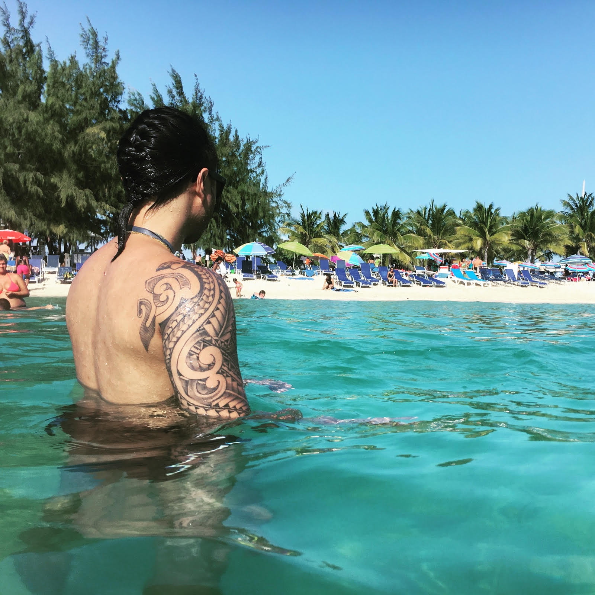

My name is Rex Vongphouthone

I am a newly wed and also a newbie when it comes to coding.
A little something about me:
I was born in Honolulu, HI. I am a first generation Laotian/American. After Hawaii my family moved to Minneapolis, MN and I lived there until I was four years old.
My mom's side of the family moved to WA, so my family followed and moved to Bellevue. I grew up in Redmond my whole life.
I graduated from Redmond High School in 2008.
I wanted to be a pharmacist, but when my childhood best friend and cousin died of cancer I was very affected and didn't end up finishing college.
I ended up choosing another career path and became a licensed Hearing Instrument Specialist.
I earned that degree from Spokane Falls Community College in a two year program.
I've been in love with my wife for 7 years and I've been married to her for 8 months!
She is my everything!
Currently, I am working at the Costco Hearing Aid Center in Lynnwood.
This will be my third year there.
I followed my late father's footsteops into this career path.
One of my co-workers has a partner who had attended Epicodus, which is how I became interested in this second career path.
So far at Epicodus I have learned so much about the coding languages.
Prior to attending Epicodus, I took it upon myself to Learn Python the Hard Way, which is a book by Zed A. Shaw, that I started reading as an introduction to what I was getting myself into.
I am having a lot of fun with this course and would love to start a new life within this career!
My current dev-team have been great!
A few of my projects at Epicodus and links to my GitHub repository:
Brief description of my projects at Epicodus using HTML and CSS:
- Hello-world: My very first project! I learned about block elements, how to create an HTML directory, and write in HMTL language.
- Goodbye: I better understood how to create a GitHub repository as well as write in HTML using proper indentation along the way.
- Cookie-recipe: I better understood the layout of HTML using unordered lists and ordered lists.
- Pets: This was something I got the chance to finally try out what I learned and be creative, showcasing my pets while using HTML. Although I was having a hard time adding an image, I finally got it right!
- My-first-webpage: For this project, I finally understood how to commit my work to my GitHub repository. This is where I learned the flow. I also learned about styling HTML using CSS.
- Paragraphs: I learned about styling with classes. I used HTML and CSS.
- Cupcakes: This was my first collaboration project with my pair where I got to drive using HTML and CSS. We learned more about cloning and forking on our github repository.
- JerkyBiz: I wanted to create my own company selling Laotian beef Jerky so I will be getting my website for it set up by the time I am finished with Epicodus. So far I have learned about divs, spans, floats, box models for CSS.

Other than coding being my new interest and hobby, I really enjoy:
- Bike riding trails with my wife.
- Going on hikes and adventrues.
- Dancing and listening to music.
- Grocery shopping at local farmer's markets.
- Reading books and listening to interesting podcasts about health and spirituality.
- Writing songs and raps to instrumental beats.
A few skills I'd like to share with you:
- Cooking: Creating and finding new recipes with my wife.
- Boxing and Muay Thai.
- Driving.